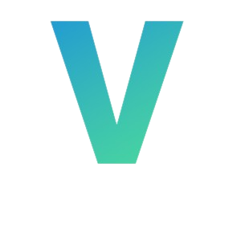

Pros of V-Model
Advantages
-
Easy to understand.
-
Time consuming is less than waterfall model.
-
Testing activities like planning , test designing happens before coding
-
Suits well for the small plans that are easily understood
-
No issues with the downward data flow
-
Suitable to safety critical systems